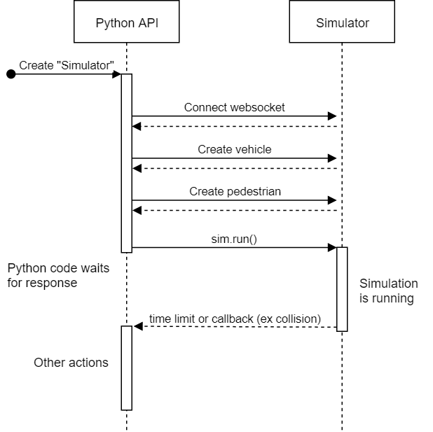
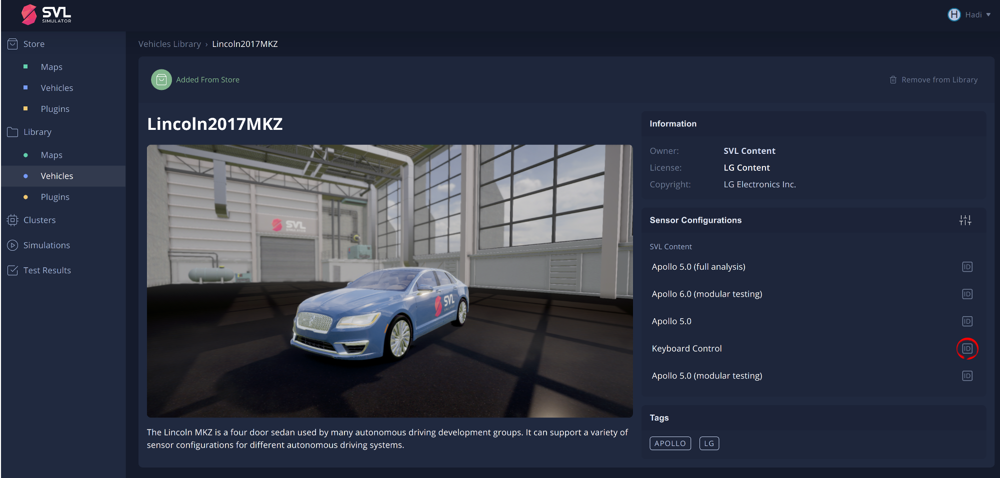
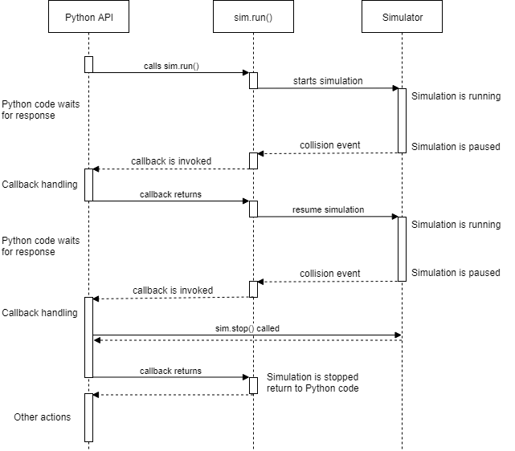

Python API Guide#
Overview top#
SVL Simulator exposes runtime functionality to a Python API which you can use to manipulate object placement and vehicle movement in a loaded scene, retrieve sensor configuration and data, control weather, time state, and more.
The interface to listen for incoming API calls is defined in config.yml. See
Configuration File and Command-Line Parameters
for more information.
Table of Contents
Requirements top#
Using Python API requires Python version 3.6 or later.
Quickstart top#
Python API is available in separate repository: https://github.com/lgsvl/PythonAPI
After cloning or downloading it from the git repository follow these steps:
-
Run the following command to install Python files and necessary dependencies:
pip3 install --user -e . -
Now launch the simulator, either using the binary file or from Unity Editor. The simulator by default listens for connections on port 8181 on localhost. See the guide for Running SVL Simulator for more information on how to set up and run the simulator.
-
Click the Open Browser button to open the Simulator UI, then click Sign in. Enter login credentials or click Sign Up to create an account.
-
You will need to add assets such as maps and vehicles to your library to use in simulations. These assets can either be added from the Store or uploaded to the cloud. Quickstart scripts require the
BorregasAvemap and theLincoln2017MKZvehicle, which are included in your library by default. -
You will need to run a simulation using the API Only runtime template to run Python API scripts on your host machine to control the simulation. See the document on Simulations for information on how to create a simulation.
-
Select the newly created Simulation and click the Run Simulation button.
-
Run the following example to see the API in action:
./quickstart/05-ego-drive-in-circle.py
This will load the BorregasAve.unity scene, instantiate one EGO vehicle, then ask
you to press Enter to start driving EGO vehicle in a circle. When the script is running, it will apply throttle and steering commands to make the car move.
Core concepts top#
The Simulator and API communicate by sending json over a websocket server running on port 8181. The API client can either be on the same machine or on any other machine on the same network.
API exposes the following main types:
- Simulator - main object for connecting to simulator and creating other objects
- Agent - superclass of vehicles and pedestrian
- EgoVehicle - EGO vehicle with accurate physics simulation and sensors
- NpcVehicle - NPC vehicle with simplified physics, useful for creating many background vehicles
- Pedestrian - pedestrian walking on sidewalks
Vehicles and Pedestrian are a subclasses of Agent which has common properties like
transform, position, and velocity.
All coordinates in the API return values in the Unity coordinate system. This coordinate system uses meters as a unit of distance and is a left-handed coordinate system where x points left, z points forward, and y points up.
The Simulator class provides helper methods to convert coordinates to and from latitude/longitude and northing/easting values.
Simulation top#
To connect to the simulator you need to an instance of the Simulator class:
import lgsvl
sim = lgsvl.Simulator(address = "localhost", port = 8181)
You can specify a different address as hostname or IP address. By default only port 8181 is used for API connection. Only one client can be connected to simulator at a time.
Next, load the scene (sometimes called map). This is done by the load method:
sim.load(scene = "aae03d2a-b7ca-4a88-9e41-9035287a12cc", seed = 650387)
scene is a string representing the UUID of the Map in the Web UI. Scenes can be added either from the map tab under Store or by manually uploading. Some of the well-known scenes available in the Map tab under Store are:
| Map name | UUID | Description |
|---|---|---|
| BorregasAve | aae03d2a-b7ca-4a88-9e41-9035287a12cc |
a Digital Twin of a real-world suburban street block in Sunnyvale, CA |
| AutonomouStuff | 2aae5d39-a11c-4516-87c4-cdc9ca784551 |
small office parking lot in SanJose, CA |
| Shalun | 97128028-33c7-4411-b1ec-d693ed35071f |
an autonomous vehicle testing facility in Taiwan (More information here) |
| SanFrancisco | 5d272540-f689-4355-83c7-03bf11b6865f |
a real world urban environment from San Francisco, CA |
| GoMentum Station | 979dd7f3-b25b-47f0-ab10-a6effb370138 |
a Digital Twin of a real-world autonomous vehicle testing facility in Concord, CA |
| CubeTown | 06773677-1ce3-492f-9fe2-b3147e126e27 |
a virtual environment with block obstacles used to perform basic testing of vehicles |
| SingleLaneRoad | a6e2d149-6a18-4b83-9029-4411d7b2e69a |
a simple two-way single-lane road |
Seed (optional) is an Integer (-2,147,483,648 - 2,147,483,647) that determines the "random" behavior of the NPC vehicles and rain effects.
Check out the Store in the Web UI for list of available scenes.
Once a scene is loaded you can instantiate agents and run simulations. See the Agents section on how to create vehicles and pedestrians.
Loading scenes takes a while, to reset a scene to the initial state without reloading it call the reset
method:
sim.reset()
This will remove any vehicles or callbacks currently registered.
After setting up the scene in a desired state you can start advancing time.
During Python code execution time is stopped in the simulator. To run the simulator in realtime, call the run method:
sim.run(time_limit = 5.0)
run accepts an optional argument for a time limit specifying how long to run. The default
value of 0 will run infinitely.
Diagram illustrating API execution:

Non-real-time Simulation top#
The simulator can be run at faster-than-real-time speeds depending on the performance of the computer running the simulator.
This is done by calling the run method with the time_scale argument:
sim.run(time_limit = 6, time_scale = 2)
run takes a 2nd optional argument specifying how much faster to run.
In the above example, if the computer is fast enough, the run call will finish in 3 seconds (6 divided by 2),
but 6 virtual seconds of data would be generated. If only time_scale is specified or time_limit = 0,
then simulation will run continuously at non-realtime speed.
The value of time_scale can be lower than 1 which gives ability to run simulation in slower than real time.
Agents top#
You can create vehicles and pedestrians by calling the add_agent method of the Simulator
object. Example:
ego = sim.add_agent(name = "511086bd-97ad-4109-b0ad-654ba662fbcf", \
agent_type = lgsvl.AgentType.EGO, state = None)
This will create the Lincoln2017MKZ vehicle with the Keyboard Control sensor configuration. This vehicle and sensor configuration are available by default in My Library. In this instance the UUID for the desired sensor configuration is entered for the name argument.
The currently available AgentTypes are:
- AgentType.EGO - EGO vehicle
- AgentType.NPC - NPC vehicle
- AgentType.PEDESTRIAN - pedestrian
Ego agents are called by the UUIDs of their sensor configurations in the WebUI. To access the UUID of a sensor configuration click on a particular vehicle in My Library to expand the detailed view and click on the ID icon for the desired sensor configuration to copy its UUID to the clipboard.

NPC agents are called by their name directly. Available NPC vehicles:
- Sedan
- SUV
- Jeep
- Hatchback
- SchoolBus
- BoxTruck
Similarly, pedestrian agents are also called by their names directly. Available pedestrian types:
- Bob
- EntrepreneurFemale
- Howard
- Johny
- Pamela
- Presley
- Red
- Robin
- Stephen
- Zoe
If an incorrect name is entered, a Python exception will be thrown.
Optionally you can create agents in specific positions and orientations in the scene.
For this you need to use the AgentState class. For example:
state = lgsvl.AgentState()
state.transform.position = lgsvl.Vector(10, 0, 30)
state.transform.rotation.y = 90
ego = sim.add_agent("511086bd-97ad-4109-b0ad-654ba662fbcf", lgsvl.AgentType.EGO, state)
This will create a vehicle at position x = 10, z = 30 which is rotated 90 degrees around the vertical axis. The position and rotation are set in the world coordinates space.
You can always adjust the position, rotation, velocity and angular velocity of the agent at any later time:
s = ego.state
s.velocity.x = -50
ego.state = s
This will set x component of velocity (in world coordinate space) to -50 meters per second and leave y and z components of velocity unmodified.
All agents have the following common functionality:
state- property to get or set agent state (position, velocity, ...)transform- property to gettransformmember of the state (shortcut forstate.transform)bounding_box- property to get bounding box in local coordinate space. Note that bounding box is not centered around (0, 0, 0) - it depends on the actual geometry of the agent.on_collision- method to set a callback function to be called when the agent collides with something (other agent or static obstacle), see callbacks section for more information.
EGO vehicle top#
EGO vehicle has following additional functionality:
apply_control- method to apply specified throttle, break, steering or other actions to vehicle. Passsticky=Trueto apply these values on every simulation update iteration.get_sensors- method to return list of Python-Api compatible sensorsconnect_bridge- method to connect to ROS or Cyber RT bridgebridge_connected- bool property,Trueif bridge is connectedset_initial_pose- method to publish an initial pose of EGO vehicle to ROSset_destination- method to publish a destination pose of EGO vehicle to ROS
You can control the movement of the EGO vehicle either by manually specifying state, applying manual control, or connecting through the bridge.
Example to apply constant 20% throttle to EGO vehicle:
ego = sim.add_agent("Lincoln2017MKZ (Apollo 5.0)", lgsvl.AgentType.EGO)
c = lgsvl.VehicleControl()
c.throttle = 0.2
ego.apply_control(c, True)
NPC vehicles top#
You can create multiple NPC vehicles on the map to drive along the lanes or follow specific waypoints on the map.
NPC vehicle has the following additional functionality:
change_lane- method to make the vehicle change lanesfollow- method to make vehicle follow specific waypointsfollow_closest_lane- method to make vehicle follow laneson_waypoint_reached- method to set callback function which is called for every waypoint the vehicle reacheson_stop_line- method to set callback function which is called when vehicle reaches a stop line at intersectionon_lane_change- method to set callback function which is called when vehicle decides to change lanes
You can control the movement of an NPC vehicle either by manually specifying state, or instructing it to follow waypoints or lanes.
To make an NPC follow waypoints prepare a list of DriveWaypoint objects and call
the follow method for the npc vehicle:
npc = sim.add_agent("Sedan", lgsvl.AgentType.NPC)
waypoints = [
lgsvl.DriveWaypoint(lgsvl.Vector(1,0,3), 5, lgsvl.Vector(0, 0, 0), 0, False, 0),
lgsvl.DriveWaypoint(lgsvl.Vector(5,0,3), 10, lgsvl.Vector(0, 0, 0), 0, False, 0),
lgsvl.DriveWaypoint(lgsvl.Vector(1,0,5), 5, lgsvl.Vector(0, 0, 0), 0, False, 0),
]
npc.follow(waypoints, loop=True)
Each waypoint has a position in world coordinates, a desired velocity in m/s, a desired angular orientation as a vector of Euler angles, an optional wait-time for the vehicle to stay idle, an bool on whether the NPC should be active while idling, and an optional trigger distance. The NPC
will ignore all traffic rules and will not avoid collisions to try to get to the next
waypoint. The angular orientation of the NPC will be interpolated in such a manner that it will pass through the waypoint at the angle specified in the DriveWaypoint. The trigger distance, if used, provides a method to pause the NPC until an ego vehicle approaches. The NPC will begin to drive as soon as its distance to an ego vehicle drops below the value specified as trigger distance in the DriveWaypoint.
You can receive information on progress by setting the on_waypoint_reached
callback. Example (see callbacks for more details):
npc = sim.add_agent("Sedan", lgsvl.AgentType.NPC)
def on_waypoint(agent, index):
print("waypoint {} reached".format(index))
npc.follow(waypoints, loop=True)
npc.on_waypoint_reached(on_waypoint)
sim.run()
follow_closest_lane will make the NPC vehicle follow whatever lane is the closest.
Upon reaching intersections it will randomly decide to either drive straight or turn.
You can also spawn a pool of NPC vehicles with the same behavior as NPCs added to a non-API simulation. They will follow the map annotations, obey speed limits, obey traffic signals, and attempt to avoid accidents. These NPCs cannot be directly controlled.
sim.add_random_agents(lgsvl.AgentType.NPC)
Pedestrians top#
You can create Pedestrian agents that will allow you to create pedestrians on sidewalks
and make them walk.
Pedestrians have the following additional functionality:
walk_randomly- method to make pedestrian walk randomly on the sidewalkfollow- method to make pedestrian follow specific waypointson_waypoint_reached- method to set callback function which is called for every waypoint reached
You can control the movement of pedestrians either by manually specifying state, or instructing them to follow waypoints or walk randomly.
To make pedestrians follow waypoints prepare a list of WalkWaypoint objects and call
the follow method for pedestrians:
npc = sim.add_agent("Bob", lgsvl.AgentType.PEDESTRIAN)
waypoints = [
lgsvl.WalkWaypoint(lgsvl.Vector(1,0,3), 5, 0),
lgsvl.WalkWaypoint(lgsvl.Vector(5,0,3), 10, 0),
lgsvl.WalkWaypoint(lgsvl.Vector(1,0,5), 5, 0),
]
npc.follow(waypoints, loop=True)
Each waypoint has a position in world coordinates, an optional idle time that the pedestrian will
spend standing in-place when it reaches the waypoint, and an optional trigger distance. You can receive information on progress by
setting the on_waypoint_reached callback.
You can also spawn a pool of pedestrians with the same behavior as pedestrians added to a non-API simulation. They will follow the map annotations and path find. These pedestrians cannot be directly controlled.
sim.add_random_agents(lgsvl.AgentType.PEDESTRIAN)
Callbacks top#
The Python API can invoke callbacks to inform you of specific events that occur during
simulator runtime. Callbacks are invoked from inside the Simulator.run() method and
while a callback is running the simulation time is paused. Once the callback finishes time is resumed and the simulation resumes execution. You can call Simulator.stop()
to stop further execution and return immediately from the callback.
The internals of this process are illustrated in the following sequence diagram:

Here the code resumes simulation after the first callback, but stops execution when the second callback is handled.
You set callback functions by calling on_NAME method of object, see information below.
Agent Callbacks top#
on_collision - called when agent collides with something (other agent or stationary
obstacle).
Example usage:
def on_collision(agent1, agent2, contact):
name1 = "STATIC OBSTACLE" if agent1 is None else agent1.name
name2 = "STATIC OBSTACLE" if agent2 is None else agent2.name
print("{} collided with {} at {}".format(name1, name2, contact))
ego.on_collision(on_collision)
Callback receives three arguments: (agent1, agent2, contact) - the first two are the agents that collide,
one of them can be None if it is a stationary obstacle like a building or a traffic light pole,
and the third is the world position of the contact point.
EgoVehicle Callbacks top#
In addition to Agent callbacks, EgoVehicle has one extra callback.
on_custom - called when a Sensor Plugin sends a callback; accepts three arguments:
(agent, kind, context) - agent instance, kind of sensor plugin as string, JSON context
See Sensor Plugins for more information.
NpcVehicle Callbacks top#
In addition to Agent callbacks, NpcVehicle has three extra callbacks:
on_waypoint_reached - called when vehicle reaches a waypoint; accepts two
arguments: (agent, index) - agent instance and waypoint index as integer
on_stop_line - called when vehicle stops at a stop line for a traffic light or stop sign; accepts one argument: (agent) - agent instance
on_lane_change - called when vehicle starts changing lane; accepts one
argument: (agent) - agent instance
Pedestrian Callbacks top#
In addition to Agent callbacks, Pedestrian has one extra callback.
on_waypoint_reached - called when pedestrian reaches waypoint; accepts two
arguments: (agent, index) - agent instance and waypoint index as integer.
Sensors top#
EGO vehicles have sensors attached. You can view the configuration of the sensors in the Web Ui. The following sensor classes have been defined to facilitate their use with the Python Api. These classes can only be used if the sensor configuration of the ego vehicle includes the sensor.
- CameraSensor - see Camera sensor
- LidarSensor - see LiDAR sensor
- ImuSensor - see IMU sensor
- GpsSensor - see GPS sensor
- RadarSensor - see Radar sensor
- CanBusSensor - see CAN bus sensor
- VideoRecordingSensor - see Video Recording sensor
Each sensor has the following common members:
name- name of sensor, to differentiate sensors of the same type, for example, to choose one out of multiple cameras attached to EgoVehicletransform- property that contains position and rotation of a sensor relative to the agent transformenabled- bool property, set toTrueif sensor is enabled for capturing and sending data to ROS or Cyber bridge
Camera Sensor top#
The Camera sensor has the following read only properties:
frequency- rate at which images are captured & sent to ROS or Cyber bridgewidth- image widthheight- image heightfov- vertical field of view in degreesnear_plane- distance of near planefar_plane- distance of far planeformat- format of image ("RGB" for 24-bit color image, "DEPTH" - 8-bit grayscale depth buffer, "SEGMENTATION" - 24-bit color image with semantic/instance segmentation)
Camera image can be saved to disk by calling save:
ego = sim.add_agent("47b529db-0593-4908-b3e7-4b24a32a0f70", lgsvl.AgentType.EGO)
for sensor in ego.get_sensors():
if sensor.name = "Main Camera":
sensor.save("main-camera.png", compression=0)
save method accepts a path relative to the running simulator, and an optional compression for png files (0...9)
or quality (0..100) for jpeg files.
LiDAR Sensor top#
LiDAR sensor has following read only properties:
min_distance- minimal distance for capturing pointsmax_distance- maximum distance for capturing pointsrays- how many laser rays (vertically) to userotations- frequency of rotation, typically 10Hzmeasurements- how many measurements per rotation each ray is takingfov- vertical field of view (bottom to top ray) in degreesangle- angle LiDAR is tilted (middle of fov view)compensated- bool, whether LiDAR point cloud is compensated
LiDAR point cloud can be saved to disk as a .pcd file by calling save:
ego = sim.add_agent("47b529db-0593-4908-b3e7-4b24a32a0f70", lgsvl.AgentType.EGO)
for sensor in ego.get_sensors():
if sensor.name = "Lidar":
sensor.save("lidar.pcd")
A .pcd file is in the binary Point Cloud Data format where each point has x/y/z coordinates as 4-byte floats and a 1-byte unsigned int as intensity (0...255).
IMU Sensor top#
You can use the IMU sensor to get its position in the vehicle. All measurements an IMU would provide can be obtained by using the transform property of the agent.
GPS Sensor top#
You can retrieve the current GPS location from the GPS sensor by calling data:
data = gps_sensor.data()
print("Latitude:", data.latitude)
Returned data will contain following fields:
latitudelongitudenorthingeastingaltitudeorientation- rotation around up-axis in degrees
Radar Sensor top#
Currently the Radar sensor can be used only to get its position and rotation in the vehicle. Radar measurements can be received in ROS or Cyber by setting the enabled property of the sensor.
CAN bus top#
Currently CAN bus can be used only to get its position and rotation in the vehicle. CAN bus messages can be received in ROS or Cyber by setting the enabled property of the sensor.
Video Recording Sensor top#
The Video Recording sensor is used to record a video of test cases for playback afterward. The following parameters can be set to configure the video recording:
width- width of the video in pixelsheight- height of the video in pixelsframerate- the number of frames per second in the videomin_distance- the minimum distance from the camera for which objects are renderedmax_distance- the maximum distance from the camera for which objects are renderedfov- the vertical field of view of the camera in degreesquality- the target constant quality level for VBR rate control (0 to 51, 0 means automatic)bitrate- the average number of bits per secondmax_bitrate- the maximum number of bits per second
Weather and Time of Day Control top#
You can control the weather properties of the simulation by reading or writing to the weather property. You can
set rain, fog, wetness, cloudiness, and damage (referring to road damage) as a float in 0..1 range. Example:
w = sim.weather
w.rain = 0.5 # set rain to 50%
sim.weather = w
Changing time of day allows to control whether the loaded scene appears as day or night.
To get the current time read the time_of_day property:
print("Current time of day:", sim.time_of_day)
It will return a float between 0 and 24. To set time of day call set_time_of_day:
sim.set_time_of_day(10, fixed=True)
This will set current time of day to 10 AM of the current date. The date and time of day are important because they determine the position of the sun and directly effect lighting in the scene. The optional bool argument fixed indicates whether the simulation should advance this time automatically or freeze it and not change it (fixed=True).
For fine-tuned control of time of day, or to set a custom date along with the time of day call set_datetime which takes a Python datetime object as input:
from datetime import datetime
dt = datetime(
year=2020,
month=12,
day=25,
hour=13,
minute = 0,
second = 0
)
sim.set_datetime(dt)
Controllable Objects top#
A controllable object is an object that you can control by performing an action using Python APIs. Each controllable object has its own valid actions (e.g., green, yellow, red, trigger, wait, loop) that it can take and is controlled based on control policy, which defines rules for control actions.
For example, a traffic light is a controllable object, and you can change its behavior by updating control policy: "trigger=50;green=1;yellow=1.5;red=2;loop"
trigger=50- Wait until an ego vehicle approaches this controllable object within 50 metersgreen=1- Change current state togreenand wait for 1 secondyellow=1.5- Change current state toyellowand wait for 1.5 secondred=2- Change current state toredand wait for 2 secondloop- Loop over this control policy from the beginning
Available controllable object types:
- signal
- cone
All Controllable objects can be added or removed dynamically. When reset() is called, all Controllables are removed and the ones in the map (if any) are added back. Controllable objects can be loaded plugins at runtime. Plugin must include IControllable and be built using the Simulator build process from the Assets/External/Controllables folder.
To get a list of controllable objects in a scene:
controllables = sim.get_controllables()
For a controllable object of interest, you can get following information:
signal = controllables[0]
print("Type:", signal.type)
print("Transform:", signal.transform)
print("Current state:", signal.current_state)
print("Valid actions:", signal.valid_actions)
For control policy, each controllable object always has default control policy (read-only). When you load a scene for the first time or reset a scene to the initial state, a controllable object resets current control policy to default one follows it.
You can get default control policy and current control policy as follows:
print("Default control policy:", signal.default_control_policy)
print("Current control policy:", signal.control_policy)
To change a current control policy, you can create a new control policy and call control function as below:
control_policy = "trigger=50;green=1;yellow=1.5;red=2;loop"
signal.control(control_policy)
To add a plugin controllable and set object state
state = lgsvl.ObjectState()
state.transform.position = lgsvl.Vector(0,0,0)
state.transform.rotation = lgsvl.Vector(0,0,0)
state.velocity = lgsvl.Vector(0,10,0)
state.angular_velocity = lgsvl.Vector(6.5,0,0)
cone = sim.controllable_add("TrafficCone", state)
To get plugin controllable object state
cone.object_state
To set plugin controllable object state
state = lgsvl.ObjectState()
state.transform.position = lgsvl.Vector(0, 0, -10)
cone.object_state = state
Helper Functions top#
Simulator class offers following helper functions:
version- property that returns current version of simulator as stringlayer- property that returns all named Unity physics layerscurrent_scene- property that returns currently loaded scene as string, None if none is loadedcurrent_frame- property that returns currently simulated frame number as integercurrent_time- property that returns currently simulation time in seconds as floatget_spawn- method that returns list ofSpawnobjects representing good positions to place vehicles in the map. This list can be empty, it depends on how the map is prepared in Unity. ReturnedSpawnobjects contain atransformwhich holdspositionandrotationmembers as aVector, as well asdestinationswhich holds valid destination points for an ego vehicle starting at the spawn point as an array oftransforms.get_agents- method that returns a list of currently available agent objects added withadd_agentmap_from_nav- method that maps transform (position & rotation) in Nav2 coordinates to Unity coordinatesset_nav_origin- method that sets NavOrigin values in a sceneget_nav_origin- method that gets NavOrigin values in a scene
To map points in Unity coordinates to GPS coordinates the Simulator class offers the following two functions:
map_to_gps- maps transform (position & rotation) to GPS location, returns same type as GPS Sensordatamethodmap_from_gps- maps GPS location (latitude/longitude or northing/easting) to transformraycast- shoots a ray from specific location and returns closest object it hits
map_from_gps accepts two different inputs - latitude/longitude or northing/easting. Examples:
tr1 = sim.map_from_gps(latitude=10, longitude=-30)
tr2 = sim.map_from_gps(northing=123455, easting=552341)
Optionally you can pass altitude and orientation.
raycast method can be used in following way:
origin = lgsvl.Vector(10, 0, 20)
direction = lgsvl.Vector(1, 0, 0)
hit = sim.raycast(origin, direction, layer_mask=1)
if hit:
print("Distance right:", hit.distance)
This will shoot a ray in the positive x-axis direction from the (10, 0, 20) coordinates.
A RaycastHit object with distance, point and normal fields is returned if something is hit, otherwise None is returned.
When raycasting you should specify a layer_mask argument that specifies which objects to check
collision with. It corresponds to layers in the Unity project - check the project for actual values or use the layer property.
| layer_mask | Name | Description |
|---|---|---|
| 0 | Default | roads must use this layer* |
| 1 | TransparentFX | used to ignore FX with transparency* |
| 2 | Ignore Raycast | used to ignore any raycasts against* |
| 4 | Water | not used* |
| 5 | UI | used to cull UI in scene* |
| 8 | PostProcessing | used to cull postprocessing effects |
| 9 | Agent | ego vehicles |
| 10 | NPC | npc vehicles |
| 11 | Pedestrian | pedestrians |
| 12 | Obstacle | sign poles, buildings |
| 13 | Sensor | used to cull sensor effects |
| 14 | GroundTruthRange | used to cull ground truth range |
| 15 | GroundTruth | used to cull ground truth triggers |
| 16 | Lane | used to cull lane triggers |
| 31 | SkyEffects | used to cull clouds |
* Default Unity Physics Layers
Changelog top#
- 2020-08-28
- Added support for time-to-collision and distance-to-collision triggers for NPCs and pedestrians
- 2020-05-22
- Added suport for setting pedestrian travel speed
-
2020-01-30
- Extended controllable objects to support plugins - see controllable plugins
-
2019-09-05
- Extended
DriveWaypointto support angle, idle time and trigger distance - Added controllable objects - use
Simulator.get_controllables
- Extended
-
2019-08-12
- Added
time_scaleargument to run function for running simulation in non-realtime - Added
seedargument toSimulator.loadfor deterministic NPCs
- Added
-
2019-04-19
- initial release